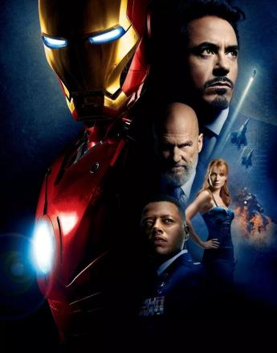
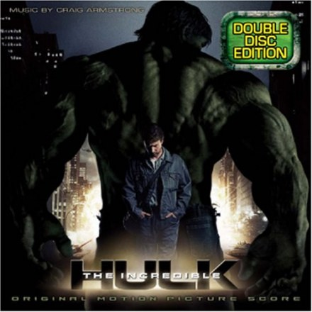
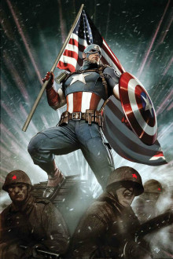
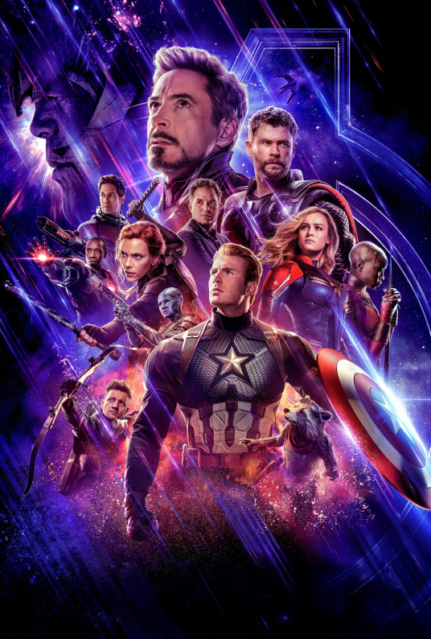
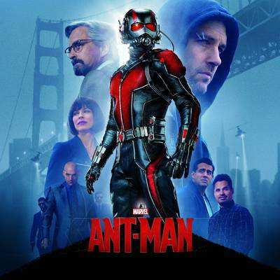
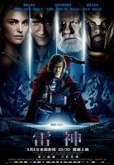
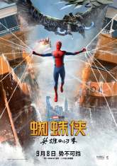
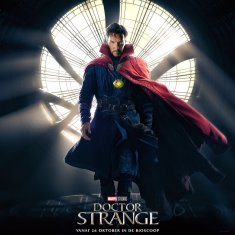
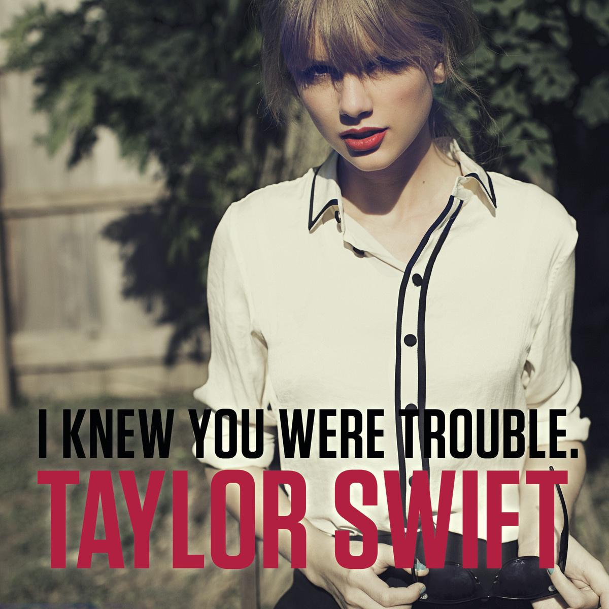

Hello
我是 丁超龙
欢迎来到我的个人网页，在这里你可以了解到我的日常生活和兴趣爱好。我也将自己喜欢的电影和音乐及视频等进行了推荐，希望通过我的个人主页介绍能加深你对我的进一步了解！
Who am i?
个人简介
姓名：丁超龙
学院：经济管理学院
班级：数据科学与大数据技术2019-1
学号：2019041011000122
爱好：旅游，音乐，动漫，电影
座右铭：不念过往，不惧将来
what can i do?
大学经历
不断完善自己，提高自身素质。在校期间任职经济管理学院学生会综合办公室负责人，参与了全国第七次全国人口普查，华东交通大学50周年校庆志愿者等社会实践活动，在工作中认真踏实。曾获第江西省九届“华创杯”调查分析大赛一等奖，第十一届“知网杯”信息搜索竞赛三等奖，华东交通大学第一届创新创业基础知识网络竞赛三等奖，2021志刚之星“拓展实践之星”，校三好学生，校二等奖学金，校三等奖学金，社会工作奖，志愿公益奖等奖项。
marvel movie recommendation
漫威电影推荐
|  |
 |
 |
 | >
| 钢铁侠 |
无敌浩克 |
美国队长 |
复仇者联盟 |
|  |
 |
 |
 |
| 蚁人 |
雷神 |
蜘蛛侠 |
奇异博士 |
动漫简介：
《钢铁侠》影片以漫威公司旗下超级英雄钢铁侠为原型，讲述了工业家及发明家托尼·斯塔克在中东地区推销军火时，遭到恐怖分子绑架，被迫在山洞中制造最致命的武器，身受重伤的他却阳奉阴违，暗中制造了一套高科技盔甲，帮助自己逃出生天，此一役后，托尼·斯塔克完善了装甲设计，开始化身成为超级英雄钢铁侠，保卫和平。
《无敌浩克》科学家布鲁斯·班纳继续寻找能治愈他那被γ辐射毒害的体内细胞之疗法，以及解除那蕴藏体内、不受约束的另一个自己。 活在孤独及没有爱人的阴霾下，布斯在治疗过程中还需过五关斩六将，一方面需逃避不断寻找他、扰人的复仇者霹雳将军罗斯；另一方面要逃离一直欲捉拿他、利用他的异能之残暴军方。 当布鲁斯·班纳在治疗上有了重大突破，变回常人的日子近在眼前之际，另一股同样拥有恐怖摧毁程度的力量突然出现。布鲁斯·班纳眼看一切努力与心血快要毁于一旦，决定作出一次前所未有的反击。
《美国队长》史蒂夫·罗杰斯是出生于美国经济大萧条时期的一个年轻人。因为看到纳粹在欧洲肆虐侵略的新闻而想入伍参军。但因为体弱多病被拒绝了。 无意中得知了史蒂夫·罗杰斯愿望的菲利普斯将军决定给他一个机会，让他参加“重生计划”。经过几个星期的测试，史蒂夫·罗杰斯被注射了超级士兵的血清，终于拥有了人类可能拥有的最完美躯体。 三个月后，他得到了作为“美国队长”的第一份任务，带着坚不可摧的盾牌和深谙战术的头脑，他投入了与邪恶势力的斗争，捍卫自由，并成为了超级英雄团体“复仇者”的领导者。
《复仇者联盟》该主要讲诉的是钢铁侠、美国队长、雷神、绿巨人、黑寡妇、鹰眼等超级英雄集结在一起，组成强大“复仇者”团队，共同惩恶扬善，为和平而战的故事。一股突如其来的强大邪恶势力对地球造成致命威胁，没有任何一个超级英雄能够单独抵挡。神盾局也措手不及，其指挥官“独眼侠”尼克·福瑞意识到他必须创建一个“史上最强”的组织，云集各方超级英雄共同战斗，才能拯救世界于水深火热，抵御黑暗势力的侵袭。于是“复仇者联盟”应运而生。
《蚁人》影片讲述了职业骗子斯科特.朗拥有身体变小力量,必须接受自己的英雄身份并帮助他的导师一生化学家汉克.皮姆保护他所发明的蚁人战服。在强大的敌人威胁下,皮姆与朗必须精心策划并执行一场惊天骗局来拯救世界的故事。
《雷神》拥有强大神力的雷神托尔，但是他自大鲁莽的行为掀起了一场古老的战争，因此被贬入凡间作为惩罚，被迫与人类一同生活。 托尔在人间认识了美丽的女科学家珍·福斯特，在大家的帮助下，托尔找到了和自己一起被贬的雷神之锤。此间，托尔的弟弟洛基为了成为阿斯加德的王，居然联合寒冰巨人，企图在永恒境界掀起一场腥风血雨。 为了阻止雷神重归永恒境界，洛基派出巨人杀死托尔。丧失能力和法战的托尔为了保护无辜的人类与自己的朋友，献出了自己的生命。托尔的死打破了天神的咒语，托尔复活并重获雷神之力战胜巨人。
《蜘蛛侠》影片主要讲述了彼得 帕克只是美国一个平凡的高中生，当一次他被蜘蛛博物馆偷跑出来的变种蜘蛛咬了一口之后，彼得的生活彻底改变了。他变得和蜘蛛一样，拥有各种蜘蛛特有的超能力：从手指喷出粘力极强的蜘蛛丝、飞檐走壁等等。彼得兴奋异常，开始利用自己的超能力去赚钱。但当他最爱的叔叔被自己放走的罪犯杀死后，彼得发誓要用自己的超能力去打击犯罪彼得好友哈利的父亲诺曼是一家生物科技公司的老板，因自己公司生产的飞行器没得到军方首脑赏识而苦恼不堪。一次意外诺曼吸入神经毒气而具有了超能力，引发了自身邪恶的本性，骑着自己研发的飞行器去到处破坏、杀人。彼得化身的蜘蛛侠开始出击了！
《奇异博士》斯特兰奇博士是一名外科手术医生，他拥有着高超的智商和精湛的技艺，是医院乃至整个医学界的传奇人物。某一日，斯特兰奇博士遭遇了一场车祸，尽管保住了双手，但这双手再也不能拿起手术刀了。 斯特兰奇博士的生活就此失去了意义陷入了绝望之中，他决定远赴尼泊尔，寻找传说中能够治愈他双手的神秘力量。在尼泊尔，风尘仆仆的斯特兰奇博士拜入了神秘的古一法师门下，成为了其弟子。 与此同时，古一法师曾经的弟子卡西利亚斯亦在虎视眈眈，企图完成他获得永生的大业。
Singer recommendation
歌手推荐 Taloy Swift
-
-
Representative song
代表作歌曲
《Love Story》的创作灵感来源于她感兴趣的一个男生，然而这个男生并不受欢迎。Taloy Swift特认为歌词中的一句“嫁给我吧，朱丽叶，我爱你”是每个女孩都幻想的结局，她希望自己在某一天能够拥有这样的结局，这也是她把这句歌词写入歌曲中的原因
《I Knew You Were Trouble》的歌词由Taloy Swift个人写作。书写的的是一个好女孩在认识一个坏男孩之后，开始逐渐迷失自己、随后被坏男孩抛弃的故事。该歌曲在全球16个地区的音乐排行榜名列前茅，于发布首周位居美国公告牌百强单曲榜季军。

I Know You Were Trouble
2012年
《Blank Space》的创作灵感来源于媒体对Taloy Swift所开的一个玩笑，她在创作歌曲之前，因为有许多媒体整天热衷于讨论她的私生活，同时又为她塑造过一些诸如“情绪化的男人杀手”，以及“极端而又不稳定的噩梦”形象。所以，她觉得把这些玩笑开回去是一件有趣的事，并将这些感想都写在歌曲中。
《Look What You Made Me Do》是在一首诗词的基础上延续完成的，Taloy Swift在诗中写入了自己的一些感受。歌词的部分灵感来源于奇幻电视剧《权力的游戏》，她则将这一点引用到歌曲中，就写出了“我有一份名单，而你的名字则用红色下划线标注”这句歌词
Look What You Made Me Do
2017年
《Lover》中的歌曲通常都是在午夜时分创作。她认为“Lover”不仅指爱情，还是一种生活态度，它不一定发生在快乐的时候，在朋友、家庭、愤怒之间、在失望中重新站起和你爱的所有事物，同样可以寻找浪漫。Taloy Swift特写歌时以一种浪漫的眼光来看待生活中的一切。
《Red》取名的理由是这张专辑盈溢着的许多不同的内容，而这些内容都与她本人在过去所经历过的那些激烈、疯狂、荒唐、强烈、半陶醉的感情有关。其中还包括强烈的爱、挫败感、嫉妒和困惑，这所有的一切——在她的脑海中都是红色的。所以，Taloy Swift就给这张专辑取名为“Red”
华交人的专属浪漫
love and freedom, you and gentleness.